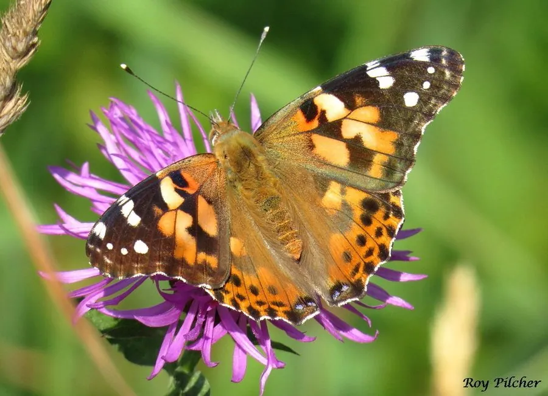

昆虫 · 动物界
小红蛱蝶 Vanessa cardui

全球分布最广的蝴蝶之一，翅面橙红带黑斑，具有跨洲迁飞能力，幼虫取食菊科、荨麻科等多种植物。
- 分类
- 门节肢动物门纲昆虫纲目鳞翅目科蛱蝶科属红蛱蝶属
- 栖息环境
- 草地、农田、花园与荒地，寄主植物和花丛附近
- 地理分布
- 除南极洲外全球各大洲均有分布
- 保护级别
- 暂无评估
物种志
小红蛱蝶翅展约 5–6.5 cm，翅面橙红至橙黄色，前翅顶角黑色并带白斑，前翅中部和翅缘有黑色斑点，翅反面呈褐黄色并带有眼斑。体型中等，是本属中较小的种类，外观与红蛱蝶相似，但后翅斑纹较少，整体显得更轻盈。
它是著名的迁飞性蝴蝶，在北半球常随季节南北迁移，一些个体能跨越大洲和海洋，是少数能进行跨洲迁徙的昆虫之一。幼虫取食菊科、荨麻科、豆科等多种植物，成虫喜访花吸蜜。小红蛱蝶除南极洲外各大洲均有分布，一年发生多代，各地种群多为迁入而非本地越冬。迁徙路线和种群数量与季风、降雨密切相关，是研究昆虫迁飞和气候变化的常用对象。
形态与习性
- 食性幼虫取食菊科、荨麻科、豆科等多种植物
- 翅展约 5–6.5 cm
- 迁徙能跨越大洲和海洋迁飞，是著名迁飞昆虫
- 生活史一年发生多代，各地多为迁入种群
- 分布除南极洲外全球广布
- 习性成虫喜访花吸蜜，飞行迅速
趣味知识
- 小红蛱蝶是分布最广的蝴蝶之一，除南极洲外各大洲都有。
- 它能跨越高山和海洋迁飞，路线与季风活动有关。
- 在许多地区，小红蛱蝶无法越冬，春天出现的个体多是迁入的。